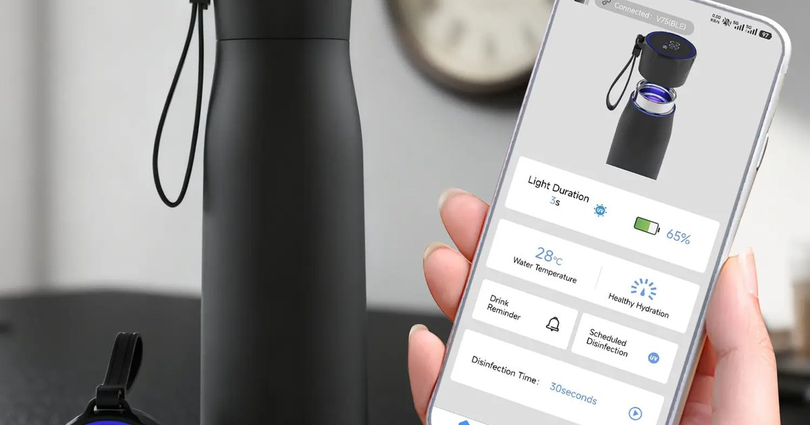

I have a confession. I’m terrible at remembering to drink water. I tell my clients to drink every hour, set timers, keep a bottle on their desk. And then I get busy and forget. My own morning 500 mL is automatic now, but by afternoon, I’m staring at an empty bottle wondering where the time went. That’s why I started testing smart water bottles and hydration apps. Not because I love gadgets, but because I need the nudge. A glowing bottle reminds me to drink when my brain is focused on something else. An app that tracks my streak gives me a little dopamine hit. I’ve tried maybe a dozen products over the years, and I’ve found eight that are actually useful. Not gimmicks. Tools that help. Here’s my honest comparison for 2026. No affiliate links. Just my experience. Number one is the HidrateSpark PRO. This is the smart bottle I use most. It has a sensor in the cap that tracks how much you drink. The bottle glows with LED lights when it’s time to take a sip. You set your goal in the app, and the bottle learns your drinking patterns. If you’re falling behind, it glows more often. If you’re on track, it glows less. The battery lasts about two weeks. The bottle is 620 mL (21 ounces), which is a good size for desk or gym. The pros: the glow is hard to ignore. The app syncs with Apple Health and Google Fit. You can join “leagues” with friends and compete for weekly hydration streaks. The cons: it’s expensive, about $60. The sensor needs to be charged. And if you forget to log a drink from another bottle, the app won’t know. I use mine at my desk. It works. My afternoon drinking has improved by about 400 mL per day since I started using it. Number two is WaterMinder. This is an app for iPhone and Apple Watch, not a physical bottle. It costs $4.99 one‑time. You log your drinks by tapping the app or using the watch. The app has a library of common beverages with their BHI values built in. So you can log “coffee, 8 oz” and it calculates net hydration. The watch complication shows your progress with a ring that fills as you drink. I like WaterMinder because it’s simple. No hardware to charge. No glowing bottle to explain to coworkers. The downside is you have to remember to log. I often drink and forget to tap. The app has reminders, but they’re easy to dismiss. Still, for $5, it’s a great starter tool. Number three is Suu. This is a free app for both iOS and Android. It’s gamified. You create a character, and drinking water helps you unlock rewards. You can join “friend leagues” and see who has the highest streak. The app sends push notifications every hour. It also tracks your urine color if you want to get detailed. The pros: free, fun, social. The cons: the gamification can feel juvenile. Some of the ads are annoying. But for people who need external motivation, Suu works. I’ve had clients who never drank water before who now have 100‑day streaks because they don’t want to let their virtual plant die. Number four is HydroCoach. This is an Android‑only app that focuses on adaptive goals. Most hydration apps set a fixed daily goal. HydroCoach adjusts your goal based on weather, activity, and your personal drinking history. If it’s hot and you ran in the morning, your goal increases. If you’ve been drinking well, it stays the same. The app also has a “drink now” button that adds a custom amount. I like the adaptive goals because rigid targets don’t work for everyone. Some days you need 4 liters, some days 2.5. HydroCoach accounts for that. The downside is it’s only on Android, and the interface is a bit dated. Number five is the Thermos Smart Lid. This is an accessory, not a full bottle. It fits on most wide‑mouth Thermos bottles. The lid has a temperature display and a sensor that tracks how many times you open it. It estimates your intake based on bottle size. The companion app shows your progress and reminds you when you’re behind. The pros: cheap compared to full smart bottles, about $35. Works with bottles you already own. The temperature display is actually useful for coffee drinkers. The cons: opening the bottle doesn’t always mean you drank. If you open it to refill, it counts as a drink. The estimate is rough. But for a budget option, it’s fine. Number six is the Equa bottle. This is a non‑electronic smart bottle. No sensors, no charging. It has a marked time scale on the side. “8 AM,” “10 AM,” “12 PM,” “2 PM,” “4 PM,” “6 PM.” You just drink to the line. That’s it. No app, no notifications, just visual feedback. I love the simplicity. It’s about $25. The bottle is glass with a silicone sleeve. It’s dishwasher safe. The downside is you have to look at it. If you’re distracted, you might miss the line. But for people who hate technology, this is perfect. I keep one on my desk as a backup. Number seven is the Ozmo Active. This is a “smart cap” that fits on any standard water bottle. It tracks every sip using a flow sensor. The companion app gives real‑time feedback and vibrates if you’re falling behind. It also tracks your drinking speed and suggests pacing. The pros: very accurate. The flow sensor is better than the HidrateSpark’s accelerometer. The cons: expensive, about $70. The cap is bulky and needs to be charged every three days. It also doesn’t work with wide‑mouth bottles. I used it for a month and liked the accuracy, but I got tired of charging another device. Number eight is Plant Nanny. This is a free app for iOS and Android. You grow a virtual plant by drinking water. Every time you log a glass, your plant gets water. If you forget, your plant wilts. The goal is to keep your plant alive. It sounds silly, but it works for some people. The app also has a community feature where you can share your plant with friends. The pros: free, cute, low pressure. The cons: the gamification is very simplistic. It doesn’t account for BHI or activity. But for kids or people who need a light‑touch reminder, it’s fine. Now let me tell you how I use these tools with my clients. I don’t recommend one product for everyone. It depends on your personality. If you love data and gadgets, get the HidrateSpark or Ozmo. If you hate carrying a special bottle, use WaterMinder on your phone. If you want something simple and cheap, buy an Equa marked bottle. If you need social motivation, try Suu or Plant Nanny. If you’re an Android user who wants adaptive goals, HydroCoach is your best bet. I had a client named Marcus who tried four different apps before settling on WaterMinder. He said the others were too “gamey” for him. He just wanted a simple log with reminders. He’s been using WaterMinder for two years and has a 400‑day streak. Another client, a teenager named Zoe, loved Plant Nanny. She said keeping the virtual plant alive motivated her to drink. After a month, she didn’t need the app anymore because the habit stuck. That’s the goal. Not to rely on the tool forever, but to use it to build the habit. What I don’t recommend is buying an expensive smart bottle if you’re not consistent with a regular bottle first. If you’re currently drinking 500 mL per day, a $60 glowing bottle won’t magically make you drink 3 liters. Start with a cheap marked bottle. Build the habit. Then upgrade if you want. I also remind clients that no smart bottle replaces listening to your body. The glow can tell you to drink, but your urine color tells you if you’re actually hydrated. Use both. The tool I use to track all this is the Hydration Goal Setter, which syncs with some of these apps.Hydration Goal Setter
Works with Apple Health and Google Fit. Syncs with HidrateSpark, WaterMinder, and Suu.
All data stays in your browser — we never see it.
Daily Water Intake Calculator
Get your individualized goal in 10 seconds. Then choose your tracking tool.
All data stays in your browser — we never see it.
Beverage Hydration Index Tool
Check the net hydration of your coffee, tea, or sports drink before you log it.
All data stays in your browser — we never see it.